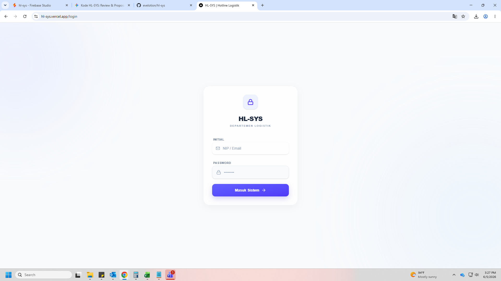
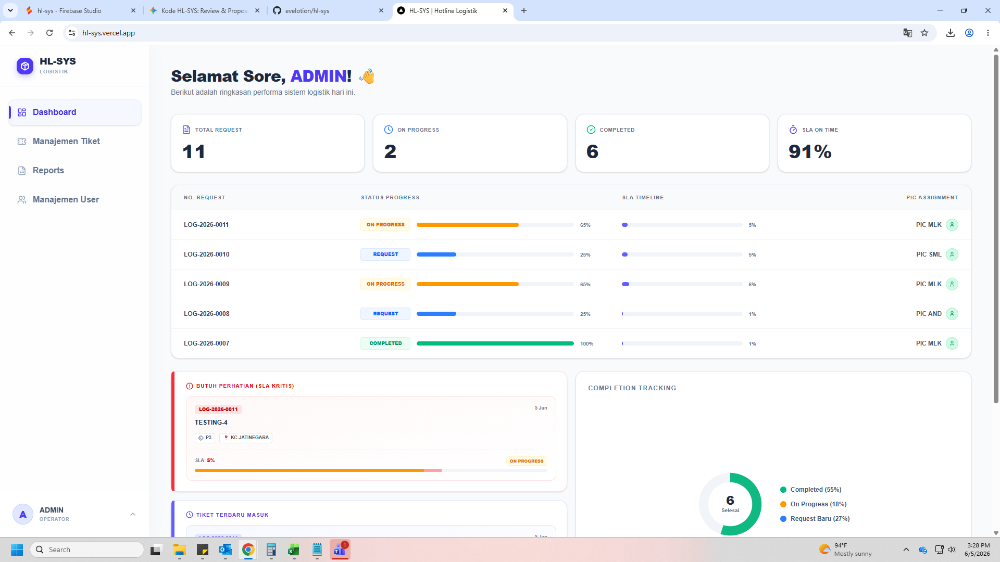
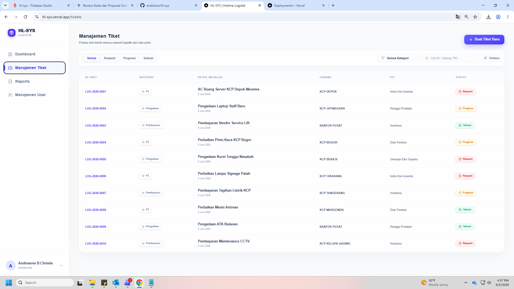
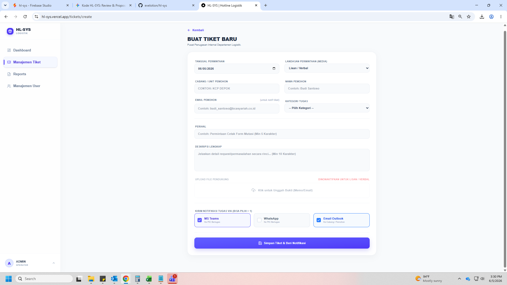
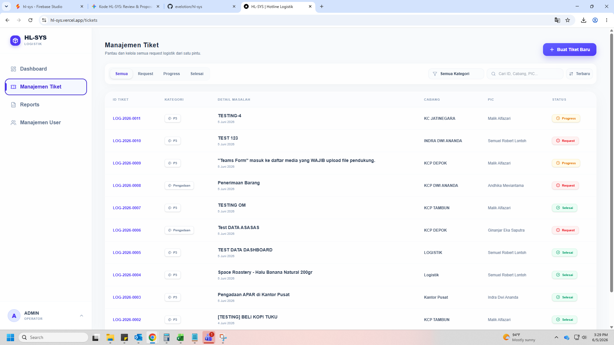
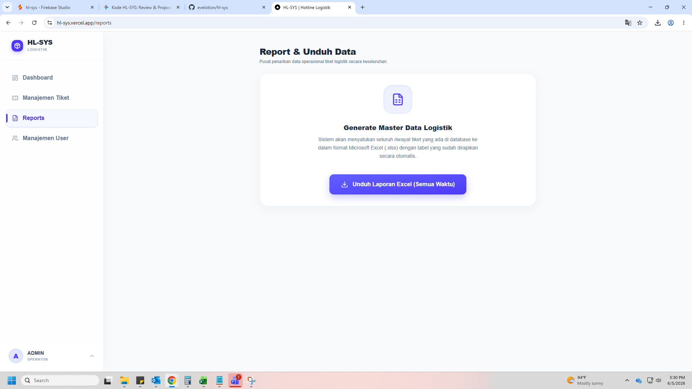
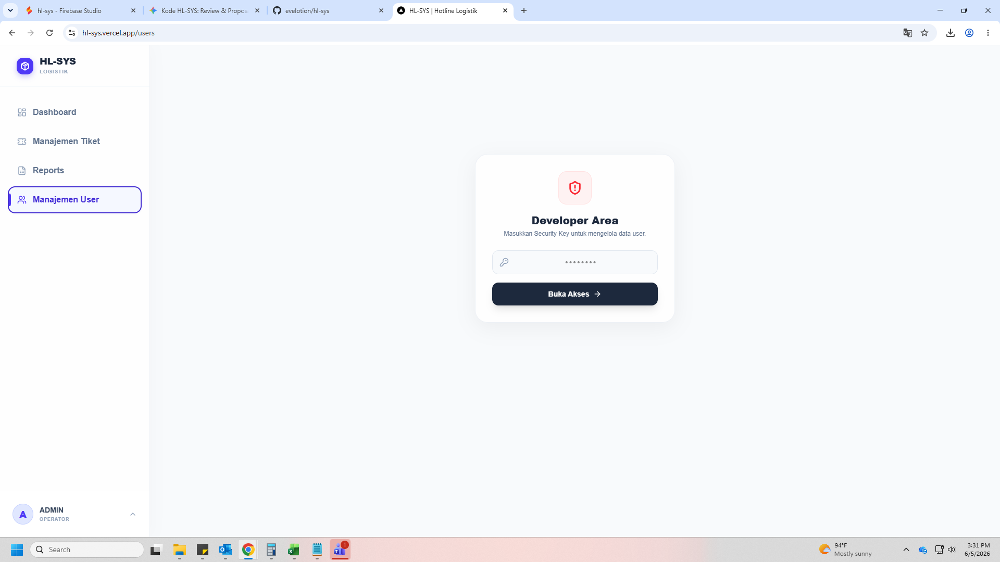

Manual Book
HL-SYS
Panduan Penggunaan Sistem Manajemen Logistik Satu Pintu
Kantor Pusat & Cabang
Daftar Isi
- Pendahuluan
- Hak Akses & Login Sistem
- Dashboard Monitoring
- Manajemen Tiket (Helpdesk)
- Melihat Daftar Tiket
- Membuat Tiket Baru
- Detail, Update Status, & Catatan
- Laporan & Ekspor Data (Reports)
- Manajemen Pengguna (User Access)
1. Pendahuluan
HL-SYS (Hotline Logistik Terintegrasi) adalah sistem aplikasi berbasis web yang dirancang sebagai Single Gateway untuk seluruh operasional Departemen Logistik BCA Syariah. Sistem ini mengintegrasikan seluruh permohonan logistik dari Kantor Pusat dan Cabang menjadi satu pintu yang transparan, terstruktur, dan mudah dilacak secara real-time.
Aplikasi ini dibangun untuk mengatasi kendala pelaporan manual yang sebelumnya tersebar melalui WhatsApp atau Email, serta memfasilitasi pengukuran Service Level Agreement (SLA) secara otomatis dan akurat.
Fitur Utama HL-SYS:
✓ Monitoring SLA secara otomatis (Timer Kritis)
✓ Notifikasi otomatis terintegrasi Omnichannel (MS Teams, Email, WhatsApp)
✓ Fitur Client-Side Compression untuk mengunggah dokumen bukti kerja dengan cepat
✓ Rekam jejak aktivitas (Audit Trail) untuk transparansi pengerjaan
✓ Export Laporan Excel Otomatis
2. Hak Akses & Login Sistem
Sistem membedakan pengguna ke dalam dua tingkatan role utama yang menentukan batasan fitur yang dapat diakses:
| Role Sistem | Fungsi Utama |
|---|---|
| OPERATOR (ADMIN) | Memiliki akses penuh. Dapat membuat tiket baru dari pemohon cabang, mengalihkan (re-assign) tugas, mengelola data Master User, dan mengekspor seluruh laporan data. |
| PIC LOGISTIK | Fokus pada pengerjaan lapangan. Hanya melihat tiket yang di-assign kepada dirinya, mengubah status menjadi In Progress atau Done, dan mengunggah foto bukti pengerjaan. |
Langkah Login
- Akses URL sistem HL-SYS melalui browser (Google Chrome / Microsoft Edge disarankan).
- Masukkan Inisial 3 Huruf (Contoh: IND, FER) pada kolom NIP/Email.
- Masukkan Password standar sistem.
- Klik tombol Masuk Sistem.

Replace with: assets/images/login-screen.png3. Dashboard Monitoring
Setelah berhasil login, Anda akan diarahkan ke halaman Dashboard. Halaman ini menyajikan visualisasi data tingkat atas yang memberikan ringkasan performa sistem logistik secara keseluruhan pada hari tersebut.
Indikator Kinerja Utama (KPI)
Terdapat empat metrik utama yang dipantau secara langsung:
- Total Request: Jumlah keseluruhan tiket logistik yang ada di dalam sistem.
- On Progress: Tiket yang saat ini sedang dalam proses pengerjaan oleh tim PIC.
- Completed: Tiket yang telah selesai ditangani dan diselesaikan secara tuntas.
- SLA On Time: Persentase tingkat kepatuhan penyelesaian tiket tepat waktu sebelum target deadline berakhir.

Replace with: assets/images/dashboard-main.pngPemantauan SLA Kritis & Beban Kerja
Sistem dirancang secara cerdas untuk memunculkan peringatan SLA Kritis (Butuh Perhatian) bagi tiket-tiket yang persentase tenggat waktunya telah menyentuh angka 80% ke atas. Selain itu, Anda dapat memantau distribusi beban kerja masing-masing PIC (Pemeliharaan, Pengadaan, Pembayaran) untuk mencegah terjadinya bottleneck pada antrean operasional.
4. Manajemen Tiket (Helpdesk)
Menu Manajemen Tiket adalah pusat komando operasional logistik. Dari halaman ini, seluruh permintaan dari cabang atau kantor pusat diproses dan didistribusikan.
4.1 Melihat & Memfilter Daftar Tiket
Anda dapat mencari tiket secara spesifik melalui fitur pencarian atau menggunakan tombol filter interaktif. Filter mencakup kategori (P3, Pengadaan, Pembayaran) serta status tiket (Request, Progress, Selesai).

Replace with: assets/images/ticket-list.png4.2 Membuat Tiket Baru
Fitur ini umumnya digunakan oleh Operator untuk mendigitalisasi permintaan perbaikan/logistik yang masuk melalui telepon, email, maupun jalur lainnya.
- Klik tombol Buat Tiket Baru pada halaman Daftar Tiket.
- Isi informasi detail permohonan, termasuk Nama Pemohon, Cabang, dan Kategori Tugas.
- Pilih PIC yang akan ditugaskan. Sistem akan menyaring daftar nama secara cerdas berdasarkan spesialisasi kategori yang dipilih.
- Lampirkan dokumen bukti (Memo/Email) jika diperlukan. Sistem secara otomatis akan mengompresi ukuran gambar agar tidak membebani jaringan server.
- Pilih saluran notifikasi otomatis yang ingin digunakan (MS Teams, WhatsApp, atau Email Outlook).

Replace with: assets/images/create-ticket.png4.3 Detail Tiket, Update Status, & Rekam Jejak
Setiap tiket memiliki halamannya sendiri yang mengisolasi konteks tugas. Di halaman ini, koordinasi dapat terjadi secara asinkron tanpa harus berpindah ke platform percakapan lain.
- Update Status Pekerjaan: PIC dapat mengklik tombol Mulai Kerjakan (In Progress) dan Tandai Selesai (Done).
- Jejak Aktivitas & Catatan: Sebuah log kronologis yang mencatat interaksi sistem. Administrator atau PIC dapat menambahkan catatan progress lapangan di sini. Sistem juga secara otomatis mencatat Log Audit apabila terjadi Re-assignment PIC atau perubahan data tiket lainnya.

Replace with: assets/images/ticket-detail.png5. Laporan & Ekspor Data (Reports)
Menu Reports mempermudah departemen logistik dalam menyusun laporan rekapitulasi bulanan, menggantikan tugas manual konvensional. Fitur ini dirancang khusus untuk memfasilitasi kebutuhan pelaporan terhadap jajaran manajemen (BOD/Group Head).
Dengan menekan tombol Unduh Laporan Excel, sistem secara real-time akan merangkum seluruh database pengerjaan logistik dan mengunduhnya ke dalam format .xlsx yang sudah ter-styling (termasuk header, border, dan format kolom) sehingga dokumen Excel siap langsung digunakan untuk keperluan cetak atau rapat presentasi tanpa perlu dirapikan ulang.

Replace with: assets/images/reports-screen.png6. Manajemen Pengguna (User Access)
Ruang administratif sistem (Developer Area) dilindungi oleh Security Key untuk menghindari penyalahgunaan modifikasi otorisasi pengguna. Setelah Anda membuka gembok akses, Anda dapat mengelola seluruh akun karyawan yang terafiliasi dengan Departemen Logistik.
Tindakan Administratif:
Di halaman ini, Anda memiliki wewenang untuk:
1. Menambah User Baru: Memasukkan nama anggota tim baru beserta jabatan fungsionalnya (Operator / PIC).
2. Edit & Update: Melakukan sinkronisasi pembaruan data seperti nomor WhatsApp dan Email MS Teams (UPN) yang krusial untuk jalur notifikasi sistem.
3. Hapus Akses: Mencabut hak masuk personel yang sudah tidak berada di departemen terkait.

Replace with: assets/images/user-management.png